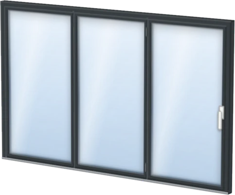
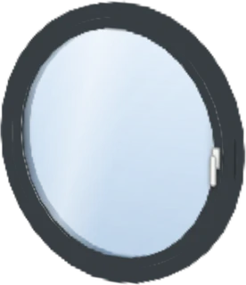
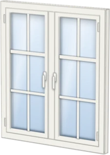
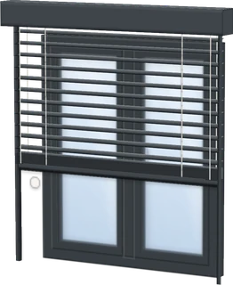
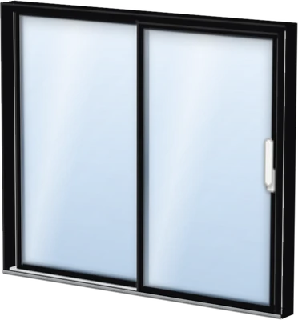
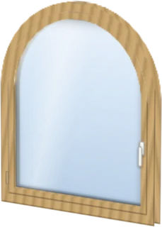
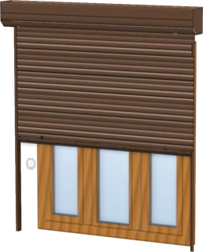
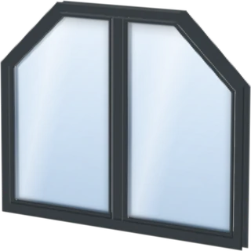
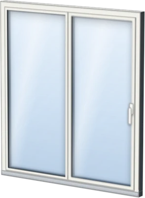
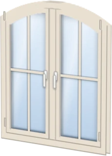

Fensterplanungganz eezi.
Planen und Messen kosten nichts. Das Aufmaßblatt kostet einmal 7,99 €.

Planen und Messen kosten nichts. Das Aufmaßblatt kostet einmal 7,99 €.
Aus dem Konfigurator

FaltschiebewandAluminium · Anthrazitgrau
RundfensterKunststoff · Anthrazitgrau
Mit Wiener SprossenKunststoff · Verkehrsweiß
Mit RaffstoreAluminium · Anthrazitgrau
Hebe-Schiebe-TürAluminium · Tiefschwarz
RundbogenfensterHolz · Eiche hell
Mit RollladenKunststoff · Golden Oak
Festverglasung, TrapezAluminium · Anthrazitgrau BalkontürKunststoff · Verkehrsweiß
BalkontürKunststoff · Verkehrsweiß
PSK-TürKunststoff-Alu · innen weiß
Segmentbogen, SprossenKunststoff · CremeweißAlle Fenster: Ansichten aus dem 3-D-Modell der App. Alle Zahlen: in der App gezählt, Stand Oktober 2026.
So geht es
Ein Fenster, vier Schritte. Ohne Konto, ohne App aus dem Store.
Erst ansehen? Die Führung zeigt alles in zwei Minuten, ohne eigene Maße.
Fenster für Fenster
Alles, was der Fensterbauer für ein Angebot braucht, sauber sortiert.

Das Blatt ist fürs Angebot; vor der Fertigung misst dein Fensterbauer einmal nach. Beispiel: Aufmaß von Familie Weber bei Fensterbau Brandt, beide erfunden.
Preis
Einführungspreis bis 17. November, danach 12,99 €. Du zahlst erst, wenn alle Maße da sind: mit Karte, Apple Pay oder Google Pay, über Stripe.
Ratgeber
Für Fensterbauer
Unter Ihrer Domain und in Ihrer Marke: Ihre Kunden planen ihre Fenster selbst, Sie bekommen jede Anfrage mit Aufmaßblatt. Ihre Kunden zahlen nichts.
Ein Link genügt, per WhatsApp, SMS, E-Mail oder von Ihrer Website.
Pilotphase: noch kostenlos. Danach sind die ersten drei Aufmaße frei, dann 9 € je Projekt oder ein Abo ab 49 € im Monat, netto. Konto und Projekte bleiben bis dahin in Ihrem Browser; jedes Aufmaß sichern Sie als PDF.